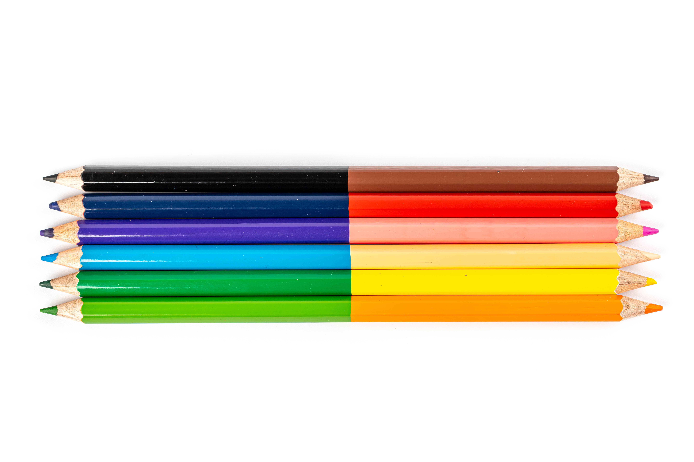

See Your Photos with Different Color Vision Deficiencies
Select what kind of color vision deficiency you wish to use
You can use the Colorblindly Chrome extension to view the entire page through different filters.
You can also go to the COBLIS Color Blindness Simulator to upload your own images and see them with the different filters.
